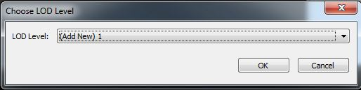
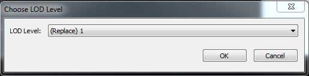
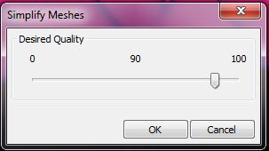

UDN
Search public documentation:
MeshSimplificationToolJP
English Translation
中国翻译
한국어
Interested in the Unreal Engine?
Visit the Unreal Technology site.
Looking for jobs and company info?
Check out the Epic games site.
Questions about support via UDN?
Contact the UDN Staff
中国翻译
한국어
Interested in the Unreal Engine?
Visit the Unreal Technology site.
Looking for jobs and company info?
Check out the Epic games site.
Questions about support via UDN?
Contact the UDN Staff
メッシュ単純化ツール
どのように機能するか
ツールウインドウを呼び出す
 メッシュ単純化ツールは、自由にドッキングできるツールウインドウとして、静的メッシュエディタにビルトインされています。
メッシュ単純化ツールは、自由にドッキングできるツールウインドウとして、静的メッシュエディタにビルトインされています。
メッシュを単純化する
 好みの単純化設定値を選択し、[ Simplify LOD ] (LOD の単純化) ボタンをクリックします。メッシュが、ただちに、Static Mesh エディタおよび他のエディタのビューポートで更新されます。
好みの単純化設定値を選択し、[ Simplify LOD ] (LOD の単純化) ボタンをクリックします。メッシュが、ただちに、Static Mesh エディタおよび他のエディタのビューポートで更新されます。
 Quality (クオリティ) 過去のツールとは異なり、トライアングル数ではなく、クオリティの量を指定します。エディタによってこの desired quality (望ましいクオリティ) が使用されることにより、メッシュのための誤差量が算出されます。この誤差量によって、不適切なメッシュを単純化してしまうことを防ぐことができます。この場合の不適切なメッシュとは、新たなメッシュのサーフェスがソースとなるメッシュのサーフェスから乖離しすぎるメッシュのことです。この手法の長所は、トライアングルの不定なリミットで停止することなく、ソースとなるメッシュからの乖離の範囲内で、メッシュをインテリジェントに最適化することができる点です。
Silhouette (シルエット) メッシュのシルエット (輪郭) がどのくらい重要であるかを指定することができます。 Normal (通常)、 High (高い)、 Highest (最高) から選択することができます。より高く設定して単純化を実行すると、メッシュの形状をより忠実に保つことができますが、トライアングルの数は多くなります。
Texture (テクスチャ) テクスチャ密度がどのくらい重要かを指定することができます。 Normal (通常)、 High (高い)、 Highest (最高) から選択することができます。より高い設
定値を選択すると、テクスチャが引き伸ばされるアーティファクトを防止することができますが、トライアングルの数は多くなります。
Normals (法線) 単純化されるメッシュのための法線を生成する場合に、次の 4 つのオプションから 1 つ選択することができます。
Quality (クオリティ) 過去のツールとは異なり、トライアングル数ではなく、クオリティの量を指定します。エディタによってこの desired quality (望ましいクオリティ) が使用されることにより、メッシュのための誤差量が算出されます。この誤差量によって、不適切なメッシュを単純化してしまうことを防ぐことができます。この場合の不適切なメッシュとは、新たなメッシュのサーフェスがソースとなるメッシュのサーフェスから乖離しすぎるメッシュのことです。この手法の長所は、トライアングルの不定なリミットで停止することなく、ソースとなるメッシュからの乖離の範囲内で、メッシュをインテリジェントに最適化することができる点です。
Silhouette (シルエット) メッシュのシルエット (輪郭) がどのくらい重要であるかを指定することができます。 Normal (通常)、 High (高い)、 Highest (最高) から選択することができます。より高く設定して単純化を実行すると、メッシュの形状をより忠実に保つことができますが、トライアングルの数は多くなります。
Texture (テクスチャ) テクスチャ密度がどのくらい重要かを指定することができます。 Normal (通常)、 High (高い)、 Highest (最高) から選択することができます。より高い設
定値を選択すると、テクスチャが引き伸ばされるアーティファクトを防止することができますが、トライアングルの数は多くなります。
Normals (法線) 単純化されるメッシュのための法線を生成する場合に、次の 4 つのオプションから 1 つ選択することができます。 - Preserve Smoothing Groups: 元のメッシュのスムージンググループを保存しようとします。
- Recompute Normals: 単純化されるメッシュのための法線を SimplygonR に再計算させることができます。
- Recompute Normals (Smooth): 単純化されるメッシュのための法線を SimplygonR に再計算させることができます。その際、スムーズエッジが選択されます。
- Recompute Normals (Hard): 単純化されるメッシュのための法線を SimplygonR に再計算させることができます。その際、ハードエッジが選択されます。
LOD の生成
メッシュ単純化ツールによって、LOD を生成することも可能です。静的メッシュエディタにおいて、[Mesh] (メッシュ) メニューから Generate LOD (LOD の生成) を選択します。 最初に、生成したい LOD レベルについて尋ねられます。
次に、LOD を生成するための制約を選択するように求められます。 この LOD を交換すべき距離 (View Distance) を選択します。さらに、LOD がソースメッシュからピクセル数においてどのくらい乖離することができるか (Allowed Pixel Error : 許容ピクセル誤差) を選択します。最後に、[OK] ボタンをクリックして、LOD を生成します。
エディタは、 LOD を生成する際に、クオリティ量を計算してくれます。先の許容ピクセル誤差 (Allowed Pixel Error) によって、メッシュが指定された位置で出現した際の妥当なピクセル数についてエディタが知ることができます。たとえば、距離を 2000、許容ピクセル誤差を 1 にセットするならば、生成される LOD が 2000 単位離れたところで表示されるときに、ソースメッシュから 1 ピクセルを超えて乖離しません。この算出された量は、概算です。この算出の前提として、バックバッファのサイズについては、1280x720 が想定されており、また、視野角については、90 度が想定されています。この概算値は、生成された LOD のクオリティを微調整する際の出発点としての役割があります。
LOD を作成した後は、おそらくクオリティを調整する必要があるはずです。メッシュを単純化するための指示に従い、生成した LOD を必ず選択するようにしてください。
距離とピクセル誤差に基づいて LOD を生成する場合は、[ Mesh ] (メッシュ) メニューから Generate LOD (LOD の生成) を選び、LOD と取り替えるように選択します。
この LOD を交換すべき距離 (View Distance) を選択します。さらに、LOD がソースメッシュからピクセル数においてどのくらい乖離することができるか (Allowed Pixel Error : 許容ピクセル誤差) を選択します。最後に、[OK] ボタンをクリックして、LOD を生成します。
エディタは、 LOD を生成する際に、クオリティ量を計算してくれます。先の許容ピクセル誤差 (Allowed Pixel Error) によって、メッシュが指定された位置で出現した際の妥当なピクセル数についてエディタが知ることができます。たとえば、距離を 2000、許容ピクセル誤差を 1 にセットするならば、生成される LOD が 2000 単位離れたところで表示されるときに、ソースメッシュから 1 ピクセルを超えて乖離しません。この算出された量は、概算です。この算出の前提として、バックバッファのサイズについては、1280x720 が想定されており、また、視野角については、90 度が想定されています。この概算値は、生成された LOD のクオリティを微調整する際の出発点としての役割があります。
LOD を作成した後は、おそらくクオリティを調整する必要があるはずです。メッシュを単純化するための指示に従い、生成した LOD を必ず選択するようにしてください。
距離とピクセル誤差に基づいて LOD を生成する場合は、[ Mesh ] (メッシュ) メニューから Generate LOD (LOD の生成) を選び、LOD と取り替えるように選択します。

複数のメッシュを単純化する
エディタ内で選択された全アクタのメッシュを単純化することができます。これは、多数の静的メッシュにまたがって最適化パスを実行する際に便利です。たとえば、遠方から常に見える複数のメッシュにわたる場合などが考えられます。エディタ内で静的メッシュアクタのグループを選択し、コンテクストメニューから Simplify Meshes for All Selected Actors (選択された全アクタのメッシュを単純化する) を選びます。
クオリティのレベルを選択して、[OK] ボタンをクリックします。選択された全アクタのメッシュが単純化されます。このバッチ処理が完了したら、個々のメッシュのクオリティレベルを調整することができます。 注意 : メッシュのアセット自体が単純化されます。この変更は、カメラの近くにあるものを含めて、全インスタンスに影響を与えます。 他のマップ内にあるインスタンスにも影響を与えます。